Register flow · mockup sweep
WCPOS 2.0 web, the cashier's register session as one family: choose register, open with a float, the cashier sheet and register panel, pay in, pay out (with the approval case), close with a count, the closure written, and Reports › Closures. Paul's words: "a sweep of that whole flow … choose register, entering the float, Paid in, paid out, close register etc etc" (2026-11-06). Three variants, judged by Codex GPT-6.1 Sol over the cap of three rounds; the pick climbed through two rounds and two corrective sheet passes.
Picked: V2 · The figure leads
One 40 px amount leads every money surface, framed as a field when the cashier types it and unframed when it is only shown; the checkout keypad sits under it; the ledger folds under Expected; the register panel is one figure and a verb row; the closed moment leads with the variance; Closures opens with a stat strip. Final Codex round: 7.7 average, every category at or above its round-0 score, Consistency 8 with no SYSTEM BREAK. The three rejected ideas and every table are below.
Desktop, 1280 (each frame is the pane or the cart column at full size)
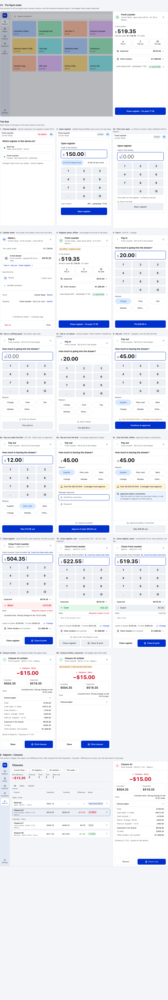
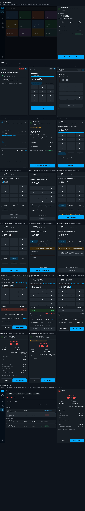
Phone, 390
States drawn
1 Choose register (ruled 2P·A) · 2 Open register, 2b first-ever open with an empty float · 3 Cashier sheet (the drawer card is the one door, ruled) · 4 Register panel, and offline · 5 Pay in, 5b nothing typed, 5c no reason · 6 Pay out over the limit, 6a under the limit, 6b manager approval, 6c approval offline · 7 Close register: short, 7b over, 7c exact · 8 Closure written, 8b unsynced · 9 Reports › Closures and the Closure 42 document. Not yet drawn: the register panel with its Expected ledger expanded (an open finding).
System sheet (the controls that share the pick's tokens, light and dark rows)
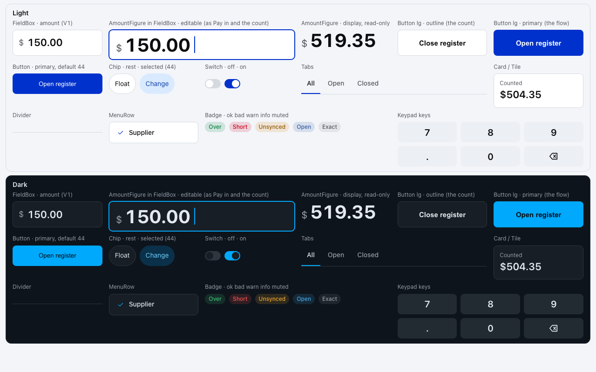
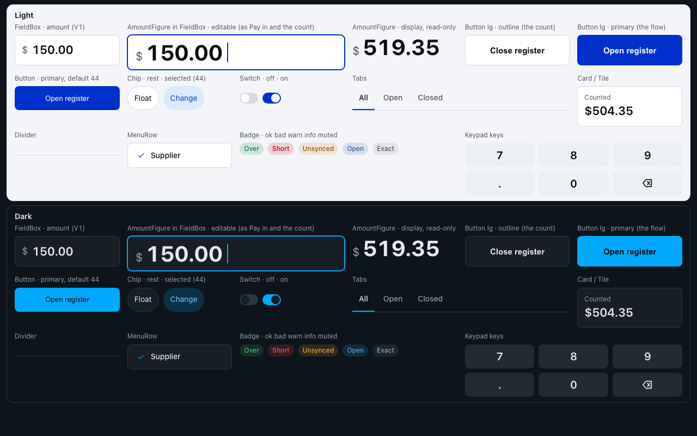
What changed between rounds
Before is V2 as first drawn (round 0); after is the final round. The frame numbers point into the boards above.
- Typed and shown amounts told apart. Round 0's 40 px amount was unframed everywhere, which the judge read as two grammars for one editable role and a look-alike of the panel's read-only balance. Now every amount the cashier types sits inside the field's frame (64 px), and only the displayed figures are bare.
- The count keeps the family's reach. The keypad had displaced Other tenders and "Leave in drawer · To bank · Change" (frame 7); both are back, and the desktop frame is the tablet's real 800 px pane.
- The written moment keeps its accounting. "Closure 42 written" (frame 8) had become a variance headline; Counted · Expected are back as tiles beside it, and the Closure paper (all eight lines) folds beneath. Same in the Closures document.
- Touch targets. Reason and float chips were 32 px; every chip is 44 px in rows with 8 px gaps.
- The ledger reads on the phone. Closures rows carry a labelled Expected · Counted · Difference (columns on desktop, one labelled line on the phone), with the result badge separate.
- Frame 6 stopped contradicting 6b. Pay out $45.00 now shows "Over the $40.00 limit · a manager must approve" and leads to approval; a new 6a is a plain under-limit pay-out.
- Missing states drawn. "Add a reason", a true empty first open, the count's Over and Exact with their note rule; on the phone also the offline approval and the unsynced closure.
- Nothing a cashier reads under 14 px, and the count note is a multi-line box again.
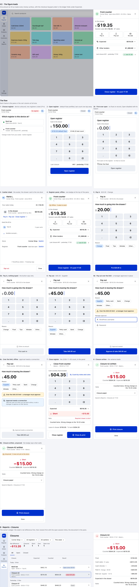
Rejected variants (round-0 scores; both scored under V2 on hierarchy, typography and density)
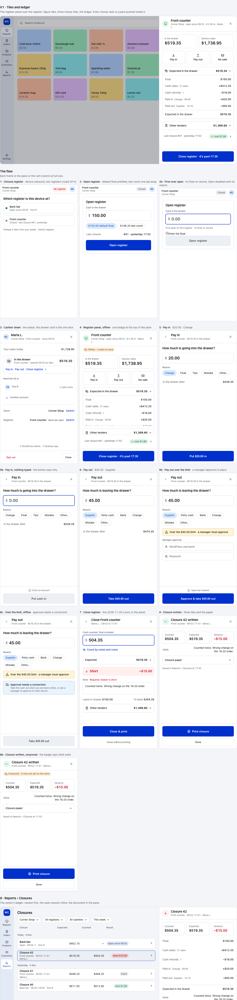
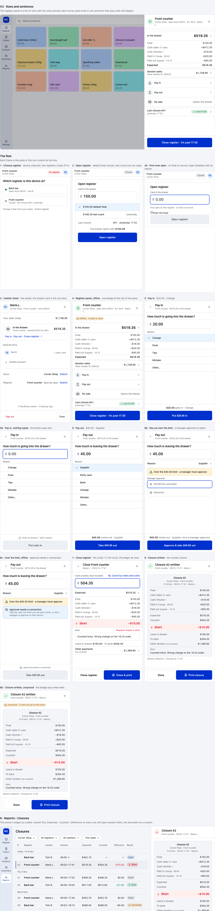
Anchors (frozen, shot once)
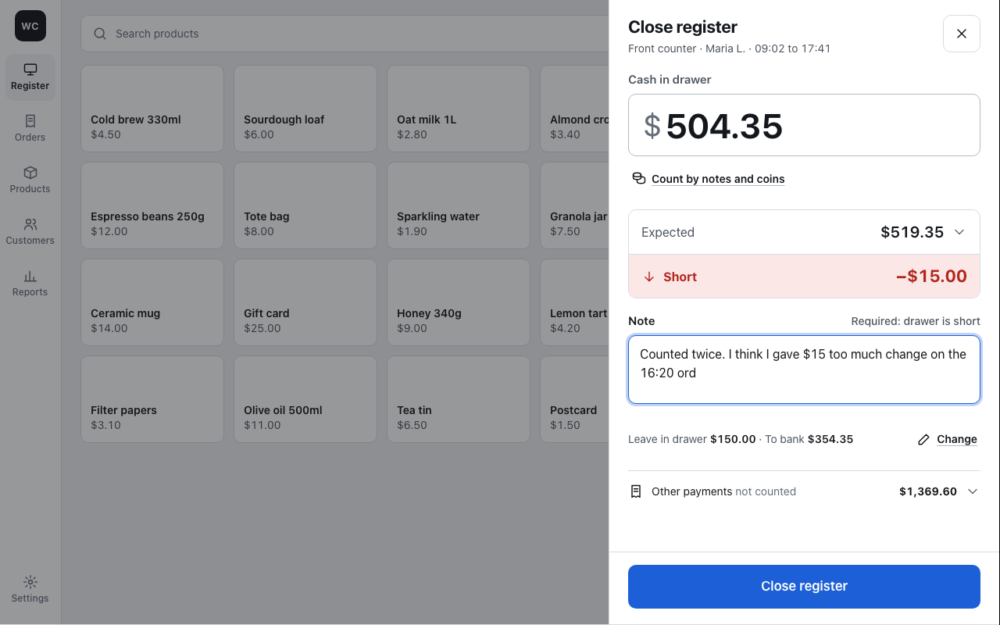
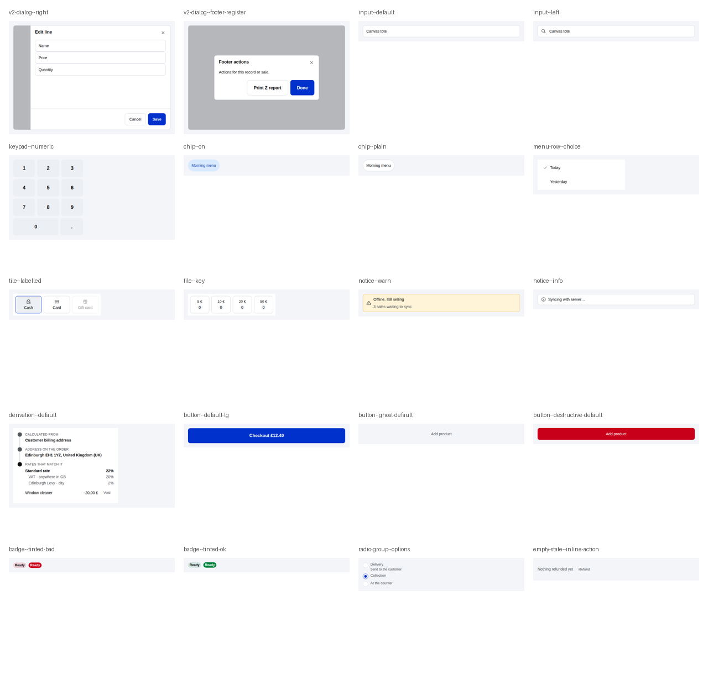
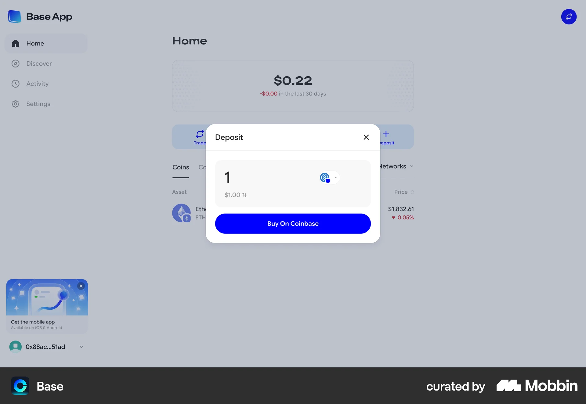
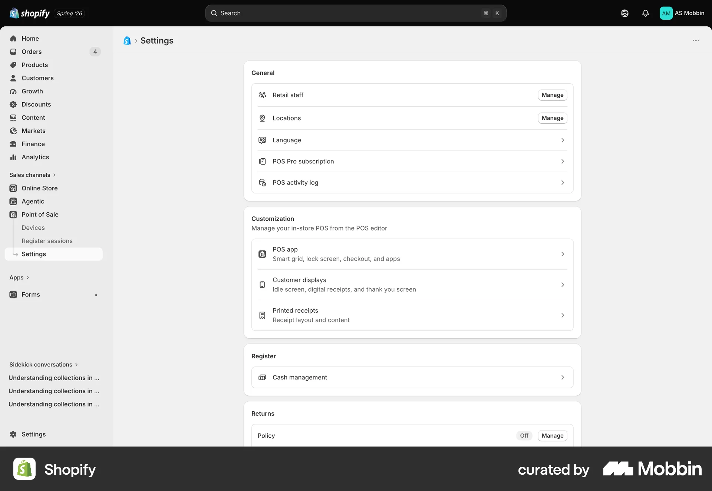
No baseline: there is no register-flow screen on main that a headless shoot can reach without a logged-in store.
Scores
Round 0: three variants
| Category | V1 | V2 | V3 | Family | Base ref | Shopify ref | Gallery |
|---|---|---|---|---|---|---|---|
| Hierarchy | 6.5 | 8 | 7 | 9 | 9 | 8 | 7 |
| Typography | 7 | 8 | 7 | 8.5 | 8.5 | 8 | 7 |
| Spacing and alignment | 7 | 7.5 | 7 | 8.5 | 8.5 | 8.5 | 7 |
| Colour and contrast · light | 7.5 | 7.5 | 7.5 | 8.5 | 7 | 7.5 | 7.5 |
| Colour and contrast · dark | 7.5 | 7.5 | 7.5 | 8.5 | — | — | 7 |
| Iconography and indicators | 7 | 7 | 7.5 | 8 | 7 | 8 | 7.5 |
| Consistency | 5 | 5 | 5 | 6.5 | 8 | 8 | 8 |
| Clarity for the person in the brief | 6 | 6.5 | 6.5 | 8.5 | 7 | 6 | 3 |
| Density | 6.5 | 7 | 6.5 | 8.5 | 8 | 7.5 | 6.5 |
| States covered | 5.5 | 5 | 6 | 3 | 1 | 1 | 2 |
| Average | 6.55 | 6.90 | 6.75 | 7.75 | 7.11 | 6.94 | 6.25 |
Every set carried the same SYSTEM BREAK, "no system sheet", so Consistency sat at 5 for all three and did not separate them. The pick reads columns: V2 leads hierarchy, typography, spacing and density and ties on clarity; its one low column, states, was three missing drawings.
The climb: V2 by round (with its system sheet from round 1)
| Category | r0 | r1 | r2 | r2b | r2c · final |
|---|---|---|---|---|---|
| Hierarchy | 8 | 8.5 | 8 | 8 | 8 |
| Typography | 8 | 7.5 | 7 | 7.5 | 8 |
| Spacing and alignment | 7.5 | 7.5 | 6.5 | 7 | 7.5 |
| Colour and contrast · light | 7.5 | 7 | 7.5 | 7.5 | 7.5 |
| Colour and contrast · dark | 7.5 | 7 | 7.5 | 7 | 7.5 |
| Iconography and indicators | 7 | 8 | 8 | 7.5 | 7.5 |
| Consistency | 5 | 5 | 5 | 5 | 8 |
| Clarity for the person in the brief | 6.5 | 7 | 7.5 | 7.5 | 7.5 |
| Density | 7 | 7.5 | 7 | 6.5 | 7 |
| States covered | 5 | 7 | 8.5 | 7.5 | 8.5 |
| Average | 6.90 | 7.20 | 7.30 | 7.10 | 7.70 |
Each round is a fresh judge context, so the anchors' own scores drift and the columns are read as relative. r1 and r2 were the climb's two findings rounds; r2b and r2c changed only the system sheet (its cells now draw the flow's own elements) and applied the brief's 14 px rule, which is why Consistency moved from 5 to 8 without the design moving. Full tables, findings and the pick's reasoning: rounds.md and rounds/r*/codex.md.
Open findings (not applied; the cap was reached)
- On the phone the Closures filter row clips "All cashiers" and lacks the date filter: an explicit two-column filter grid.
- The count's keypad, always open, pushes "Leave in drawer · To bank · Change" below the first phone viewport, where the family anchor shows them beside the count: a keypad that collapses once the amount is entered and reopens on tapping it. A behaviour change, for Paul.
- The register panel's Expected ledger is only drawn folded: one expanded frame per layout.